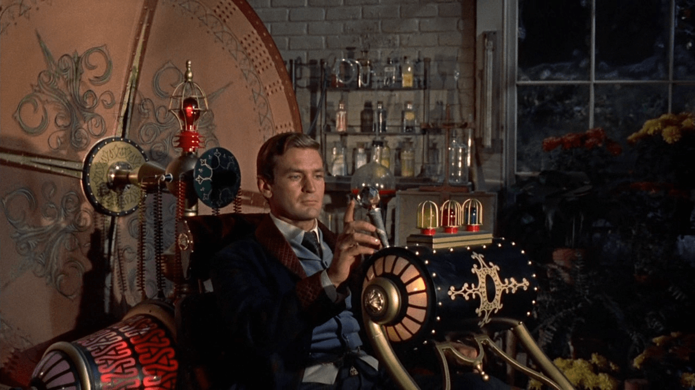
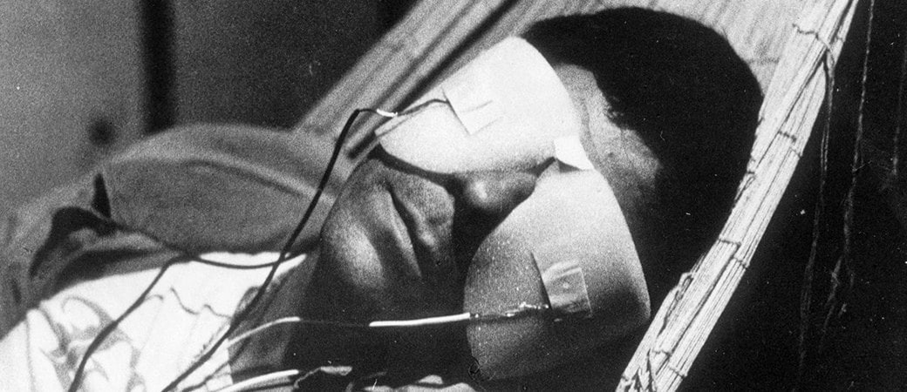
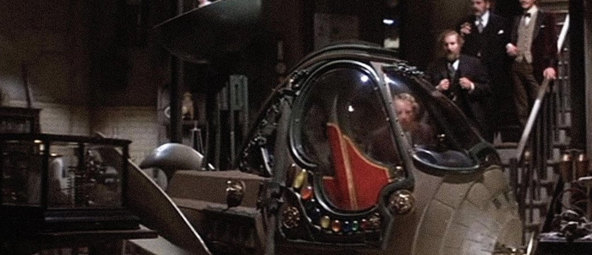
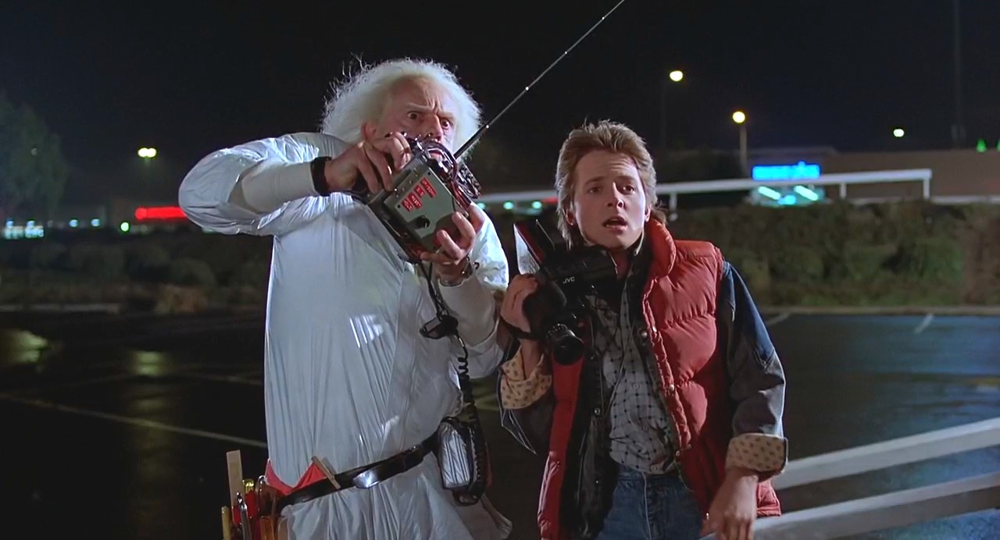

Культура
В литературе
Описание путешествий во времени является распространённым приёмом, используемым в научно-фантастической литературе. В фантастике идея таких путешествий и специального устройства («машины») для этой цели приобрела популярность во многом благодаря известному роману Герберта Уэллса «Машина времени» (1895).
Однако эта идея использовалась в литературе и ранее. Путешествие в будущее описано Фаддеем Булгариным в его очерке «Правдоподобные небылицы, или Странствования по свету в двадцать девятом веке», 1824 год (возможно, это первое описание путешествия во времени в мировой литературе). Идею продолжил Александр Вельтман, в романе «Александр Филиппович Македонский. Предки Калимероса» (1836), описавший путешествие в прошлое на волшебном гиппогрифе.
Путешествия главного героя во времени в собственном теле без помощи технических приспособлений описаны в «классических» произведениях Марка Твена «Янки при дворе короля Артура», Джека Лондона «Межзвёздный скиталец», Сватоплука Чеха «Путешествие пана Броучека в XV столетие», Лазаря Лагина «Голубой человек» и многих других.
О путешествиях во времени писали Клиффорд Саймак, Артур Кларк, Филип Дик, Айзек Азимов («Конец Вечности»), Гарри Гаррисон, Антон Грановский, Кир Булычёв, Станислав Лем, Джоан Кэтлин Роулинг, Джек Финней.
Классическим описанием нарушения причино-следственных связей является рассказ Роберта Хайнлайна «Все вы зомби». Его главный герой — девушка, которую соблазнил незнакомец. Через девять месяцев она родит ребёнка, причем врачи выясняют, что она гермафродит, и удаляют женский комплект органов. После этого главный герой — теперь мужчина, завербовывается в службу патруля времени. Сначала он отправляется в прошлое, где соблазняет некую девушку (которая и является им самим в прошлом). Отправившись на девять месяцев вперёд, он похищает ребёнка и отправляется в далекое прошлое, где оставляет в приюте похищенного ребёнка, из которого потом вырастет он сам. Таким образом, получается, что человек сотворил самого себя из ничего. Иначе говоря, встает вопрос об изначальном появлении материи. Ибо остаётся неясным, откуда появился главный герой, чтобы создать самого себя.
В кино
«Машина времени» (1960 год)
Очень хороший и интересный фильм производства США о молодом человеке по имени Джордж, который создал машину времени. События происходили в 1899 году, и все друзья героя скептически относились к его изобретению. Однажды, когда все разошлись домой отмечать Новый Год, Джордж сел в свою машину времени и нажал рычаг. Он переместился сначала в военные годы 20 века, а затем в 802701 год, где люди вели пассивный образ жизни, подчиняясь существам, живущим в подземельях, так называемым Морлокам. И спасти человеческую расу от порабощения может только прибывший из прошлого незнакомец.
«Эта замечательная жизнь» (1946 год)
Замечательный фильм американского режиссера Фрэнка Капры, рассказывающий о мужчине, который жил в маленьком городке и всю жизнь мечтал посетить другие страны, посмотреть мир. Но все время находились какие-то неотложные дела, приходилось решать проблемы других людей и забывать о себе. Однажды герою все это надоело и он решил покончить жизнь самоубийством. Бог, узнав об этом, решил подослать к мужчине ангела, который был на испытательном сроке. Условие было такое: если ангел уговорит героя не совершать суицид, то Господь подарит ему новые крылья. Очень желая их заполучить, ангел делает все, чтобы человек снова захотел жить, и принимает правильное решение, унося героя за пределы родного города, показывая такой огромный мир. И хотя фильму уже огромное количество лет, он не теряет свою актуальность, ведь темы любви, взаимовыручки, ценности семьи и человека всегда будут популярны. Сильная картина с прекрасной игрой актеров.
«Взлетная полоса» (1962 год)
Фотороман Криса Маркера, из которого родился один из лучших фильмов Терри Гиллиама, — «12 обезьян». Выжившие после Третьей мировой войны парижане с помощью машины времени отправляют то в будущее, то в прошлое своего посланника, чтобы лучше понять настоящее. При этом главного героя в финале ждет неприятное открытие: оказывается, в детстве ему удалось увидеть собственную смерть, но, тссс, он об этом пока не знает. В реверсивном движении есть какая-то фаталистическая красота, оценить которую можно только в черно-белых стоп-кадрах. Из них Крис Маркер (вымышленное имя Кристиана-Франсуа Буша-Вильнева) ткет свое 30-минутное полотно, в котором отражается простая, как палка, доступная даже для двенадцати обезьян истина: «Если изменить ничего нельзя и все уже произошло — расслабься и получай удовольствие».
«Путешествие в машине времени» (1979 год)
Друг Герберта Джорджа Уэллса (Малкольм МакДауэлл) оказывается Джеком Потрошителем (Дэвид Уорнер) и уводит у писателя-фантаста из-под носа машину времени. Та, впрочем, оказывается снабжена противоугонной системой, так что Уэллс отправляется вслед за известным маньяком, думая, что окажется в утопии, а оказывается в Америке 1979 года. Машина времени изобретательного писателя называется «Арго», работает на солнечной энергии и имеет такие же компактные формы, как автомобиль «Ока». Если на ней двигаться на запад, переместишься в прошлое, если на восток — в будущее. Пока Уэллс ищет убийцу, у него закручивается роман с банковской служащей (Мэри Стинберген), а еще он собирает уйму фактуры для своих будущих книг. Крайне элегантное кино.
«Назад в будущее» (1985 год)
Старшеклассник Марти Макфлай из 1985 года случайно попадает на машине времени в 1955 год и предпринимает усилия, чтобы вернуться назад. Ситуация осложняется тем, что он нарушает ход истории, и его юная мать влюбляется вместо отца в него… Нужно во что бы то ни стало исправить ситуацию, иначе Марти может исчезнуть. Этот бойкий, задорный фильм и сейчас пересматриваешь с удовольствием. Как и большинство голливудских фильмов, он посвящен борьбе с лузерством. Отец Марти — Лузер с большой буквы, и Марти не только помогает отцу избавиться от лузерства, но и полностью изменяет экономическую среду в которой его семья живет в 1985 году. Теперь у них богатый дом, новые машины, а паршивец Биф, прежде угнетавший отца, состоит у семьи на службе. Рецепт благополучия прост: еще учась в школе, надо со всех сил зарядить нужному человеку в торец.
 Вверх
Вверх